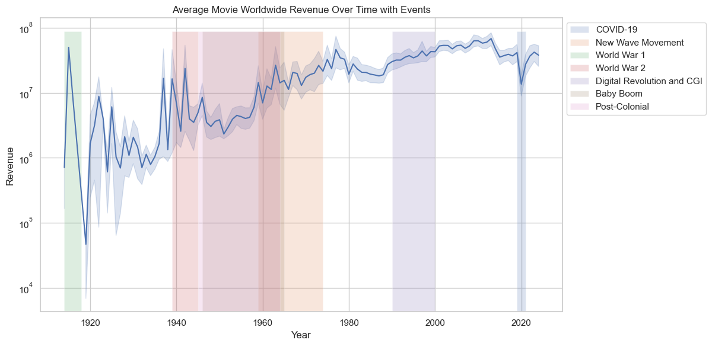
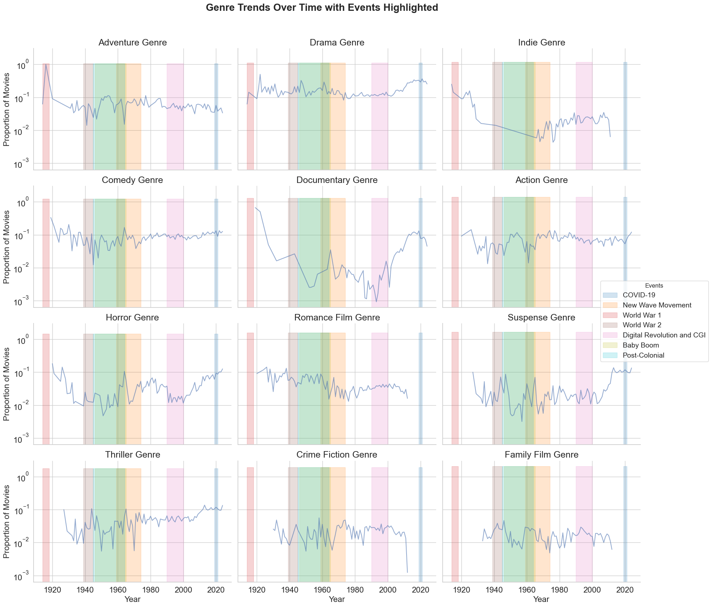

Movies are everywhere, reflecting and shaping culture globally. Today, it’s easier than ever to immerse yourself in a Japanese anime, laugh along with a classic Charlie Chaplin silent film, or lose yourself in the spectacle of an American blockbuster. Whether through streaming platforms, movie theaters, DVDs, or TV, cinema has become an omnipresent part of our daily lives, dominating screens in every form imaginable. Despite the numerous other entertainment options available, cinema continues to captivate audiences, and it is this enduring appeal that we will analyze in this project.
But how did we get here? It all started back in 1895 when these two French guys, Les Frères Lumière, decided it’d be cool to project moving pictures in public. Fast forward through history, and here we are. Our grandparents? They sat through war propaganda at the theaters. Our parents? They saw the dawn of CGI with legendary franchises like Star Wars, Indiana Jones, and Jurassic Park. And us? Well, we lived through COVID lockdowns, binge-watching entire seasons of shows in one weekend. Cinema has had its ups and downs, but it’s more alive than ever.

But this is just our story. Were people in other parts of the world affected in the same way? How have their cinema-going habits evolved? And what has been the impact on their local film industries?
Here’s the plan: we’ll examine how regional and global film industries have been succesfull in movie theatres, exploring the impact of economic and population shifts on box office revenues. We’ll also investigate the most significant events of the last century to understand their influence on cinema across different countries. Then comes the exciting part: analyzing how domestic and international box office trends vary by country. Finally, we’ll explore genres: how they’ve developed over time and how they compare to global patterns.
DATASET ANALYSIS:
So, to figure all this out, we started with the MovieSummary dataset. Pretty solid stuff, but we realized it needed a little extra spice. That’s when we decided to beef it up with some juicy data scraped from BoxOfficeMojo and TheNumbers. Because, let’s face it, the more data, the better.
We kept in mind that box office revenues reflect only a movie's success in theaters. When analyzing genres or the number of movies produced each year, we also included films that were not shown in theaters, such as TV movies and documentaries. Additionally, comparing box office revenues can be tricky due to factors like inflation, currency differences, and the time period when the movies were released. It’s crucial to consider these variables when interpreting the data. Always remember: be careful with data and the stories it tells!
The first map we look at show us that the U.S. basically invented the blockbuster game. Unsurprisingly, it was the OG of the movie industry, followed closely by Central Europe. France, of course, made its mark during the French New Wave – classic art house vibes. But the real game-changers showed up in the 90s, when India, China, and Brazil started to rise. They didn’t just join the global cinema party – they became major players, shaking up the entire industry.
To get a better sense of the global film landscape, we grouped countries by their continents to see how each contributes to the industry. The plot illustrates the influence of regions like Hollywood in North America, Bollywood in Asia, and other key players around the world. From this, we focused on the top contributors in each continent to ensure our data is as accurate and representative as possible. Think of it as picking the standout stars of the global movie stage.
*A KDE (Kernel Density Estimate) is like a smooth line that hugs the bars of a histogram, whispering, “Relax, I got this,” as it tries to show the overall trend more elegantly.
We decided to focus our analysis on 1960 and later. Why? Because that’s when the data became significantly more reliable. Earlier years were like trying to piece together a movie from a damaged reel—frustratingly incomplete. Moreover, excluding those earlier years had no impact on the overall trends, making 1960 the logical starting point. Examining the changes in movie production over time further reinforced this choice. Before 1960, the data was inconsistent due to insufficient record-keeping and incomplete datasets. However, post-1960, production began to increase steadily, and the trends became far more apparent, providing us with a solid foundation for meaningful analysis.
To ensure our study captured a global perspective, we narrowed our focus to 16 countries that best represented the evolution of cinema. These countries offered the most consistent data and included at least two from each continent, ensuring a balanced and comprehensive view.
That‚Äôs how we prepped the stage for our deep dive into cinema trends. Ready to roll? Lights, camera, action! üé¨
HOW WERE SELECTED COUNTRIES' NATIONAL CINEMATOGRAPHIC INDUSTRIES DIFFERENTLY IMPACTED BY EXTERNAL FACTORS?
One can ask oneself what could influence a national film industry‚Äôs production. Mhhh... money, of course! üí∏ The most obvious way to connect a country's economy to its film industry is by checking out its GDP over time. But wait ‚Äì maybe demographics matter too? We thought about population growth and threw it into the mix. And if you keep brainstorming, you hit the jackpot: historical, cultural, and technological events. Alright, let's roll the reel back to the main plot!
The first graph shows how movie revenue, GDP, and population evolved over time across 16 countries. GDP (in green) tends to follow a steady upward climb, while population (in red) increases at a slower and more predictable rate.
Hollywood, for instance, exploded in the mid-20th century when the U.S. economy was booming. A flourishing economy is like a golden ticket for bigger budgets, shinier productions, and sequels no one asked for. Meanwhile, South Africa and Argentina display far more volatility, with sharp drops and rises hinting at economic instability affecting their film industries. On the other hand, India and Nigeria showcase more recent spikes in revenue, reflecting the rapid rise of Bollywood and Nollywood in the global film scene. So yes, GDP growth often props up film industries, but not always predictably.
Next up, we’ve got a heatmap showing how strongly movie revenue correlates with GDP and population for each country. We can see that in countries like the USA, UK, and France, GDP and population strongly correlate with movie revenue. This suggests that in well-established film industries, economic power and the size of the audience are key factors driving success. On the other hand, emerging markets such as India and Mexico display moderate (positive) correlations. This could suggest that less developed film industries may be influenced by additional cultural, regional, or market-specific factors. Countries with near-zero correlations (for example Nigeria) likely face market challenges that limit the film industry’s connection to GDP and population.
Finally, we can also observe some surprising results:
-For Hong Kong, the low correlation values (0.31 for GDP and 0.30 for population) could suggest that the local film industry faces intense competition from neighboring regions, such as Mainland China, South Korea, and Japan. Despite its historical significance in cinema, the market may be saturated or heavily influenced by external content, limiting the direct impact of GDP and population size on domestic film revenue.
We then try to predict the national box office revenue (for each of our countries) trends over time using GDP and population data. We can observe that GDP and population data predict revenues well in developed markets like the United States (R² = 0.88) and the United Kingdom (R² = 0.79), but fail in emerging markets like Nigeria (R² = 0.14) and Argentina (R² = 0.10). This supports our previous assumptions stated when analyzing the Spearman correlations between national box office revenue and GDP resp population.

And now, the grand finale: the timeline that overlays significant cultural, technological, and historical events with movie revenue trends.
Wars and conflicts: World War I and II caused sharp declines in film production and revenue, particularly in Europe. But they also gave us iconic cinematic movements like Italian Neorealism. War makes movies grittier, bolder, and often political. Cultural movements: Think of the 60s and 70s. Counterculture was in, and movements like French New Wave and New Hollywood redefined cinema. It’s like the film industry went to art school and came back edgy. Technological shifts: From the invention of sound to CGI dinosaurs in Jurassic Park to Netflix making binge-watching a global sport, tech keeps rewriting the script. For instance, South Korea’s rise in global cinema owes a lot to tech accessibility. And yes, let’s not forget the COVID-19 pandemic, which shut theaters down but boosted streaming like never before. Every major event acts like a plot twist, shaping the ups and downs of cinema. History isn’t just a backdrop; it’s an active player.
 We can see that on the long term, there is a general increase in worldwide mean movie revenue. This could be due to various factors such as technological advancements or population growth. For years prior to 1950, we can see that there are high variations in the worldwide mean movie revenue , which could be due to lack of data or economic and global events like World War I, the Great Depression, and World War II influencing movie production and demand (audience spending capacity was likely constrained.).
We can see that on the long term, there is a general increase in worldwide mean movie revenue. This could be due to various factors such as technological advancements or population growth. For years prior to 1950, we can see that there are high variations in the worldwide mean movie revenue , which could be due to lack of data or economic and global events like World War I, the Great Depression, and World War II influencing movie production and demand (audience spending capacity was likely constrained.).
Starting in the 1950s, the revenue trends stabilize and gradually rise, which could correspond to the post-war economic boom and the rise of television. An increase in mean movie revenue is observed from the 1980s onwards and revenue levels appear to stabilize around the 2000s at higher values, although there is still some year-to-year variability. However, we can notice a clear drop in revenue around 2020, which is likely due to the COVID-19 pandemic. The closure of theaters worldwide could have significantly impacted box office revenue during this period. Therefore, we would like to test if the distribution of worldwide box office revenues for movies released pre-Covid (2017-2019) has significantly changed versus post-Covid (2020-2022) for each country in our list.
To do this, we perform a KS test (Kolgomorov - Smirnov test) where we compare whether the worldwide box office revenue distribution for movies post-Covid differs significantly from the pre-Covid distribution for each country. Specifically, the alternative hypothesis (alternative='less') checks if post-Covid revenues are stochastically smaller than pre-Covid revenues. A significant p-value (smaller than 0.05) would suggest that the worldwide revenues post-Covid are lower than pre-Covid for the given country whereas if the p-value is higher than this threshold, we fail to reject the null hypothesis, meaning there is no evidence that revenues have decreased post-Covid compared to pre-Covid.
Germany and France show significant shifts in their revenue distributions (p smaller than 0.05), suggesting Covid had a measurable impact on their box office performance. However, most other countries with already well developed movie industries(including USA, UK, Canada, Japan, Australia) show no significant difference (p > 0.05), indicating consistent box office trends pre- and post-Covid. Countries like South Korea, New Zealand, and India exhibit moderate to high test statistics but lack statistical significance, likely due to the lack of data unaccounted variability. Similarly, we obtain very low test statistics with high p value in the case of countries like Nigeria and Argentina which is also likely caused by the lack of data.
For countries with well developed movie industries, the results of our test seem coherent :
- In the case of France and Germany we observe that those countries show significant shifts in revenue distributions post-Covid, which is plausible given their strict lockdown measures and cultural preferences for local cinema. Indeed, those countries and especially France are known to have robust local film industries, and the pandemic might have disrupted its production and audience engagement. Moreover, European countries also faced prolonged restrictions, which may have delayed box office recovery.
- In the case of USA, Australia, UK, Canada, ect where we observed no significant difference in revenue distributions pre and post Covid, it is quite coherent since these markets often rely heavily on Hollywood blockbusters, which adapted quickly post-Covid (for example they had simultaneous streaming releases and also the big-budget productions are resuming faster). The moderate test statistics and non-significant p-values align with their ability to recover quickly compared to other markets.
- In the case of Japan, it had relatively successful Covid-19 management early on and reopened cinemas sooner than other regions which could explain their national box office revenue stability.
The Big Picture üé•üçø
Together, these graphs reveal how economies, populations, and history shape the movie industry. Money and history are like the big bosses pulling the strings, while tech acts as the wildcard. Population? Maybe a side character. Emerging markets like Nollywood and K-dramas keep the plot exciting, while Hollywood sticks to its predictable blockbusters. Just like a great film, the industry keeps evolving‚Äîand there‚Äôs always room for a surprise twist. üçø
EXPLORING HOW A COUNTRY'S MOST POPULAR GENRES RELATE TO FILM EXPORTATION OR DOMESTIC RETENTION
Movies are more than just entertainment – they reveal a lot about what people enjoy watching and how far those stories travel. Some countries embrace their local films, creating a thriving domestic market. Others dominate globally, exporting their films to captivate audiences worldwide. So, what does this mean for genres and revenue? Let’s dive in.
In countries like India and Nigeria, local audiences have a strong preference for homegrown films, and it shows at the box office. Domestic revenues often rival or exceed international earnings, demonstrating that these films primarily stay within national borders. India, for instance, sees Bollywood films thriving with their characteristic blend of Drama, Romance, and Musical numbers. These genres are deeply rooted in local culture, appealing strongly to Indian audiences but often not translating as well globally. Similarly, in Nigeria, Nollywood dominates with relatable Family Dramas and Romantic Comedies. These films cater to the tastes of their domestic viewers, reinforcing a powerful local market.
In stark contrast, the U.S. and U.K. have mastered the art of global appeal, with their films flourishing internationally. Hollywood productions, with their emphasis on Action-packed blockbusters featuring Superheroes and Explosions, seem tailor-made for universal audiences. Their themes and styles resonate across cultures, securing dominance at the global box office. Meanwhile, the U.K. has carved a niche with its export of Period Dramas, Thrillers, and quirky Comedies. These genres, often tied to British cultural identity or eccentricity, manage to charm audiences far beyond national borders. Some countries focus on satisfying local tastes with culturally specific genres, while others emphasize universal themes that ensure international success.
Genres vary significantly by country, reflecting the unique cultural and storytelling traditions of each region. In China, for example, audiences demonstrate a clear preference for “Chinese Movies,” a category that represents the country’s rich cinematic heritage. Drama and World Cinema also feature prominently, underscoring a commitment to showcasing stories that resonate with local values and perspectives. The U.S. and U.K., by contrast, dominate with global hits that include Action, Drama, and Comedy. Their films are designed to be universally accessible, featuring superheroes, emotionally charged narratives, and humor that transcends language barriers. In France, there is a notable preference for Drama and World Cinema, reflecting the French appetite for artistic and culturally nuanced storytelling. Australia and Canada offer a balance, blending local storytelling with globally popular genres like Comedy and Action, allowing them to cater to both domestic audiences and international markets. Across the globe, some nations prioritize their cultural roots, while others adapt to appeal to audiences worldwide, resulting in an intriguing tapestry of film preferences.

Cinema has always mirrored the world’s historical and cultural shifts, with significant events shaping the evolution of genres over time. During and after World War II, there was a marked increase in Documentaries and War Dramas, as filmmakers sought to document and process the turmoil of the era. These genres captured the collective need to reflect on and make sense of a rapidly changing world. In the Baby Boom era, Comedy and Family Films surged in popularity, providing audiences with lighthearted escapism during a time of optimism and domestic stability. The 1960s brought the New Wave Movement, a period of artistic experimentation that saw the rise of Drama and Crime Fiction, as directors pushed boundaries and redefined cinematic storytelling. The advent of the Digital Revolution in the 2000s marked another turning point, with technological advancements in CGI fueling the dominance of Action and Adventure films, genres that continue to command international appeal. Most recently, the COVID-19 pandemic brought its own influence, leading to a resurgence of Documentaries and Horror. These genres, in many ways, reflected societal anxieties while also addressing a renewed interest in exploring real-world issues and fears. Cinema evolves alongside history, its genres ebbing and flowing to capture the spirit of each era, proving that movies are as much a reflection of their time as they are a form of entertainment.